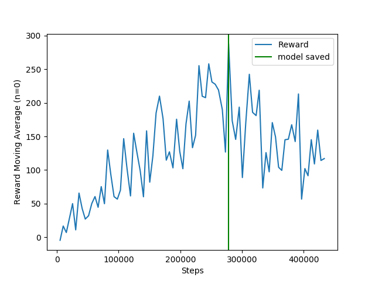
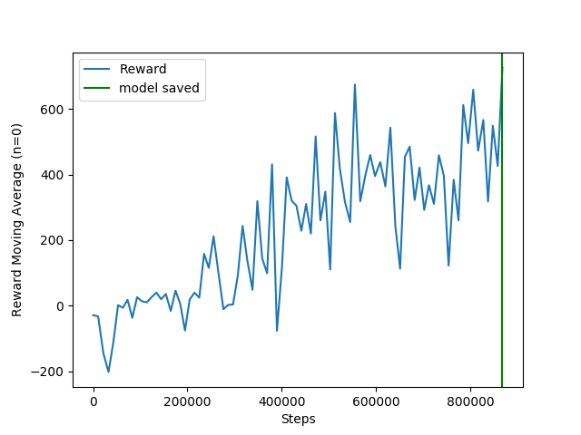
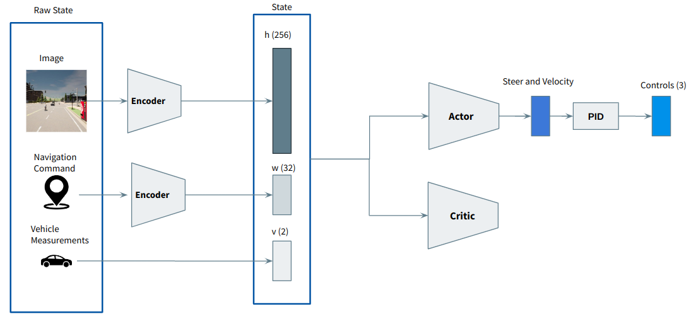
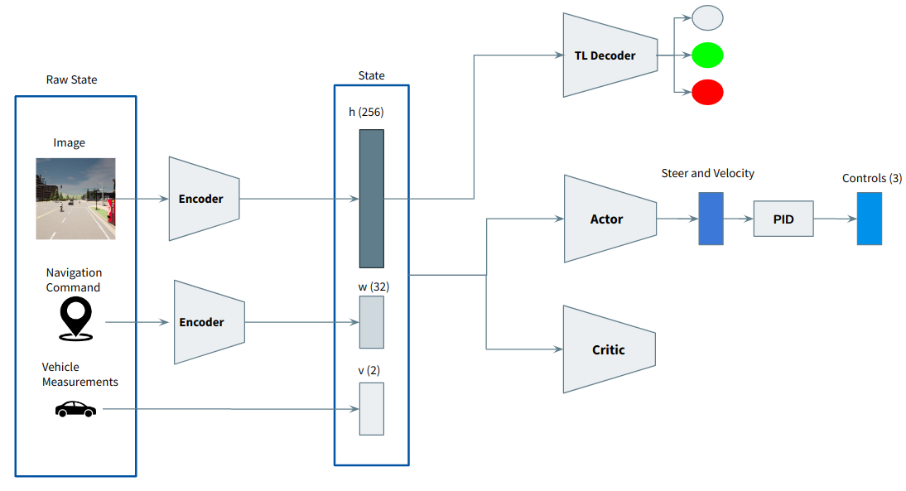

In these months, I realized that all papers that proposed agents trained with end-to-end RL weren't in fact end-to-end. They separate the perception training from the planning, which misclassifies them as end-to-end.
Based on the work from the previous months, I think we can be the first proposing an agent that can drive in complex urban environments training with end-to-end RL.
The common approach, is to use larget image encoders (ResNet, Inception) and train the perception module separately using a giant dataset. Then they use the compact image representation as the RL state, and train the RL algorithm.
To avoid training the perception separately, we have to reduce the size of the image encoder due to the weak sign of the RL loss.
Based on the results from November 2022, we can conclude that reducing the size of the encoder is not enough, and therefore additional training techniques are required.
The rest of the blog contains techniques that were tested, as well as the main conclusions.
Deep Deterministic Policy Gradient (DDPG) with augmented data
Paper: Mastering Visual Continuous Control: Improved Data-Augmented Reinforcement Learning
This paper replaces the Soft Actor Critic (SAC) by the Deep Deterministic Policy Gradient (DDPG) RL algorithm, and also changes the exploration behaviour.
With this paper, the exploration is added using a gaussian distribution using the mean of the policy, and a sigma value that will linearly decay over time. Using this sigma, we have more control over the exploration, which is the main limitation of SAC.
Changing from SAC to DDPG led to faster and more effective learning:
SAC

DDPG

Now, based on the videos, the problem to solve is the intersections.
Waypoint encoder as a neural network
Instead of giving a navigation command to the agent, we can give the next 10 waypoints from the global planner, and then encode that information in the state using a neural network:

Traffic Lights
The main problem now is the traffic lights. The traffic lights occupy about 25 pixels in the image, and the agent struggles to associate those pixels with the punishment received when moving through a red light.
To force the latent representation of the image to containg traffic light features, a classification traffic light decoder was created:

Although this helped, this alone wasn't sufficient. After some failed experiments, I found that using a learning rate of 1e-4, as is common in DDPG, wasn't the optimal choice.
Based on my experiments, in AD, the representation learning poses additional challenges than ATARI games or humanoid tasks. For this, the learning rate of the encoder should be 1e-3 in order to reach to meaningful representations as soon as possible.
Since the encoder and the critic are progagated using the same loss, they should have the same learning rate. However, I'm still not sure about the learning rate of the actor. I'm currently running some experiments to figure this out.
In addition, I also implemented a method to regularize the encoder's gradients (Stabilizing Off-Policy Deep Reinforcement Learning from Pixels).
The combination of all this features, led to the following results:
Failed attempts
Here I present a list of the aprroaches that I implemented and didn't worked out.
- Using image encoders with attention: paper
- Using visual transfromers as image encoders: paper
- Bisimulation Learning: paper
- Critic with dropouts: paper
- Using supervised learning on the predicted speed
What's Next?
Train our approach in an environment with vehicles and pedestrians. Train all approaches that are end-to-end RL to compare with. These approaches are: SAC, SAC+AE, CURL, DRQ, DRQV2, ALIX.
In addition, implement the following new features:
- LSTMs to process temporal information
- Waypoint encoder using convolution layers
- Prioritized experience replay
- Auto Encoder
- Contrastive Learning
- Decoder to predict the distance to the next vehicle